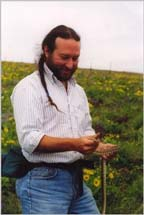
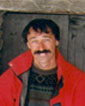

Society of Systematic Biologists
Home of Systematic Biology
Popular contentSyndicateCategories
User loginNavigationWho's onlineThere are currently 0 users and 4 guests online.
|
Associate Editors
Interests: Metazoan phylogeny (particularly relationships among cephalopod mollusks and spiralian metazoans); divergence time estimation using molecular sequence data; phylogenetic theory and methodology; marine biogeography; invertebrate biology.
Interests: Statistical inference in molecular evolution; model selection using information theoretic approaches as well as likelihood approaches; detection of real discordance among gene trees, distribution of genealogies across the genome; models of protein evolution with complex variation of rates; statistical analysis of comparative data across species.
Robb Brumfield Board: Keith Barker (University of Minnesota), John McCormack (Occidental College)
Thomas Buckley
Dan Faith Interests: phylogenetic inference methods, quantitative biodiversity assessment, philosophy of science, multivariate pattern analysis, experimental design, ecology.
 Interests: My general interests are in plant systematics, evolution of floral morphology, pollination biology, biogeography, and applications of phylogenetic methods to evolution to ecology? More specifically, I am interested in the systematics of the flowering plant family Apocynaceae, biogeography of American-African disjunctions, Mexican and western US biogeography, and phylogenetic-based analyses of character evolution.
Peter Foster
 Interests: Mathematical and computational aspects of phylogenetics; distance-based methods; maximum likelihood approaches; duplication processes and histories.
Richard Glor
Luke Harmon
Mark Holder
Interests: Estimation of evolutionary patterns and processes, molecular phylogenetics, likelihood-weighted model averaging, tree-space exploration, model misspecification, and detection of factors that can bias phylogenetic estimates; evolution of animals and, to a lesser extent, other taxonomic groups (e.g., Bacteria and Archaea).
Interests: phenotypic evolution, especially in insects and salamanders, evolution and development, systematics and speciation of salamanders
Karl Kjer Interests: rRNA secondary structure; Alignment of sequence data for phylogenetics; Higher level phylogenetics of Insecta (family level and above); Higher level phylogenetics of Anura. Research Taxa: Trichoptera; Odonata; Chrysomelidae.
Interests: My research interests are in phylogenetic methodology, including modeling and algorithm development. I am also interested in coalescent theory, particularly the role of the coalescent in gene tree-species tree incongruence. I also work on other problems in statistical genetics, including the analysis of microarray and QTL data.
Interests: Morphological systematics, morphometrics, extinctions, biostratigraphy, role of fossils in phylogenetics, biogeography, palaeoecology, application of quantitative methods to natural history
Interests: Molecular phylogenetics of grasses, with a focus on hybridization and polyploidy. I use gene trees from unlinked loci to identify reticulate evolutionary patterns, and attempt to sort out the roles of ancestral polymorphism, hybridization, and/or polyploidy in explaining these patterns.
Thomas Near
Adrian Paterson Interests: Cophylogenetics (particularly of lice and birds), origin of parasitism, biogeography of New Zealand and Gondwanaland, evolution of behaviour, phylogenetics and conservation of seabirds (particularly penguins and albatrosses)
David Posada
Susanne S. Renner Interests: Phylogenetics of seed plants, especially angiosperms; reproductive biology and sexual systems; ancestral state reconstruction; divergence time estimation using molecular sequence data.
Brett Riddle
Interests: molecular phylogenetics, tree-of-life, macroevolution, speciation, conservation
Edward Susko
Brian Wiegmann
Tiffani Williams |
Latest issue
EVOLDIRphylobabble.orgiPhyloPhyloseminarSystematics AssociationNESCentThe Genealogical World of Phylogenetic NetworksCiteULike PhylogenyEvolutionary Bioinformatics
CladisticsBMC Evolutionary Biology
Molecular Biology and Evolution |
 Follow us on Twitter
Follow us on Twitter Find us on Facebook
Find us on Facebook